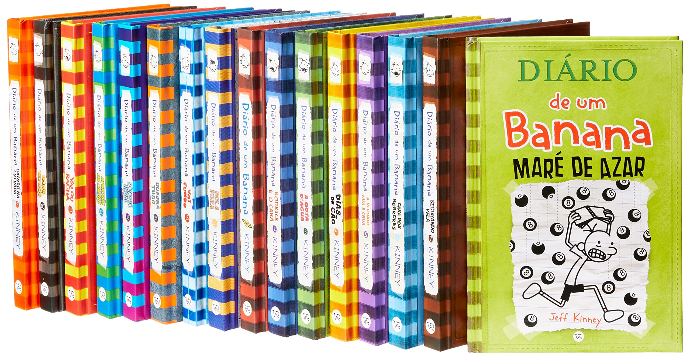

<!DOCTYPE html>
<html lang="pt-br">
<head>
    <meta charset="UTF-8">
    <meta http-equiv="X-UA-Compatible" content="IE=edge">
    <meta name="viewport" content="width=device-width, initial-scale=1.0">
    <link rel="stylesheet" href="index.css">
    <title>diario de um banana</title>
</head>
<body>
    
</body>
</html>

<div></div>
<div> 



</div>
<div></div>

<h1>diaro de um banana</h1>
<h2>Jeff Kinney</h2>
<p>   Ao longo da história, são abordados temas como a relação com os amigos, a escola, a família, também fala de medos, inseguranças, conflitos
     e todos os assuntos que envolvem a vida “nada fácil” de um garoto nessa idade. As crianças acabam se identificando com
     os personagens e é por isso que elas gostam tanto.
     A série Diário de um Banana acompanha a vida de Greg Heffley, um garoto da sexta série que não tem muitos amigos, não é muito popular,
     enfrenta brigas diárias com os irmãos e, ignorando tudo isso, se considera um floquinho de neve especial que vai fazer muito sucesso no futuro.</p>


<div class="botaopreco">
<p><span>R$169,80</span></p>
<button type="button">Compre Agora</button>


<div>


</div>